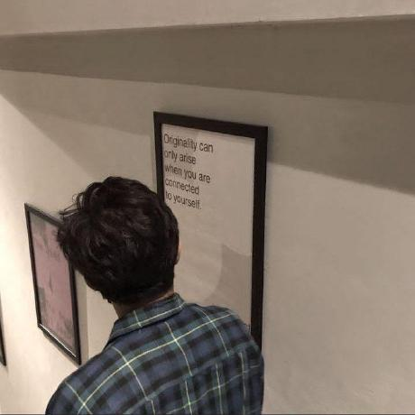

Finding my way around
Getting comfortable with folders and the Terminal commands I use to move around.
Read the guideWEB DEVELOPMENT · LEARNING PORTFOLIO
I’m learning web development one practical at a time. This is where I’ve collected my BOSSCODER work—from first Git commands to responsive pages built with Flexbox and Grid.

The person behind the commitsA LITTLE ABOUT ME
I’m Sarang. I like learning by trying something, seeing what breaks, and making it a little better. These pages are part of that process: simple web exercises that helped me get comfortable with the basics.
My public GitHub profile describes me as an open-source contributor and lists Bangalore as my location. This portfolio sticks to what I can show here: the course work below and the public repositories on my account.
THE WORK
Thirteen small steps, grouped the way I learned them. Open any page to see the idea in practice.
STARTING WITH THE TOOLS
Getting comfortable with folders and the Terminal commands I use to move around.
Read the guidePutting project files under version control and saving a first snapshot.
See repository historyMaking a change on a feature branch, then reviewing and merging it safely.
See feature branchDocumenting the project and learning how version tags mark a release.
Browse project filesSTRUCTURE AND STYLE
A semantic bio page with room for the details that make it personal.
View the bio pageBuilding a full page from an introduction, work, and the details around it. You’re looking at the finished practical.
Back to the topKeeping colours, spacing, and typography together in one shared stylesheet.
See the shared CSSA sticky navigation bar, a layered card, and fixed and positioned examples.
Try the positioning pageA responsive nav and card row that can wrap as the screen gets narrower.
View the Flexbox layoutLAYOUTS THAT ADAPT
Giving a header, card row, and footer room to adapt to their content.
See Flexbox in actionUsing Grid areas to arrange a lead story and supporting pieces.
Read the layoutMaking space for a featured card and a gallery that responds to the screen.
View the projects gridTrying both, then choosing the one that suits the layout problem.
Compare the layoutsFROM MY PUBLIC GITHUB
I found this project among the public repositories on my GitHub account. Its README describes a simple idea: connect two text-processing agents, run them in sequence, and follow what happens at each step. The project README lists React, Node.js, Express, Prisma, PostgreSQL, and JWT in its stack.
View the public repositoryTHAT’S THE WORK SO FAR
There’s more to learn, but this is a good place to start. The code and the practical pages are open on GitHub.
Find me on GitHub